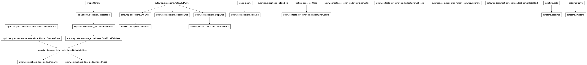
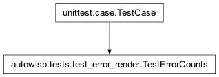

autowisp.tests.test_error_render module
Class Inheritance Diagram

Unit tests for error rendering (the shared formatter).
Renders persisted Error rows (written via persist_error) through
error_render; uses a throwaway project database.
- class autowisp.tests.test_error_render.TestErrorCounts(methodName='runTest')[source]
Bases:
TestCase
error_count / error_counts_by_step / the step filter.
Fresh project per test, since these assert exact counts.
- test_counts_by_step_excludes_stepless()[source]
Per-step counts group step errors and skip pipeline/BUI ones.
- test_counts_exclude_resolved()[source]
Resolving an error drops it from the badge and step markers.
- test_gate_always_includes_pipeline_errors()[source]
A pipeline error gates any launch, even unrelated steps.
- class autowisp.tests.test_error_render.TestErrorDetail(methodName='runTest')[source]
Bases:
_RenderTestCaseerror_detail: user vs developer views, remediation, degradation.
- test_developer_view_adds_sidecar_backed_fields()[source]
developer=True adds message/traceback/details and provenance.
- test_missing_sidecar_degrades()[source]
With no sidecar, developer fields are present but empty/flagged.
- class autowisp.tests.test_error_render.TestErrorListRows(methodName='runTest')[source]
Bases:
_RenderTestCaseerror_list_rows: the cheap, inline-only list-view projection.
- class autowisp.tests.test_error_render.TestErrorSummary(methodName='runTest')[source]
Bases:
_RenderTestCaseerror_summary: one-line component/step/artifact/message.
- class autowisp.tests.test_error_render.TestFormatDetailText(methodName='runTest')[source]
Bases:
_RenderTestCaseformat_detail_text: terminal rendering of the detail dict.